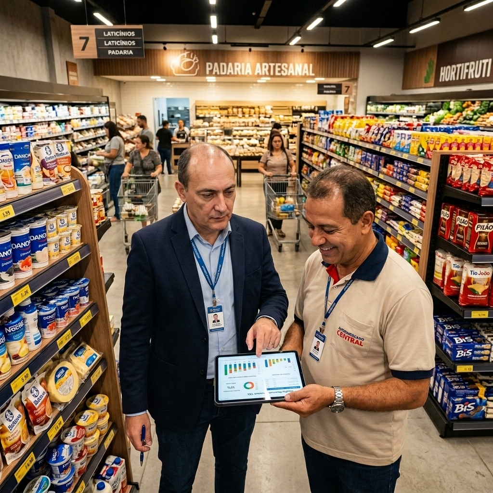
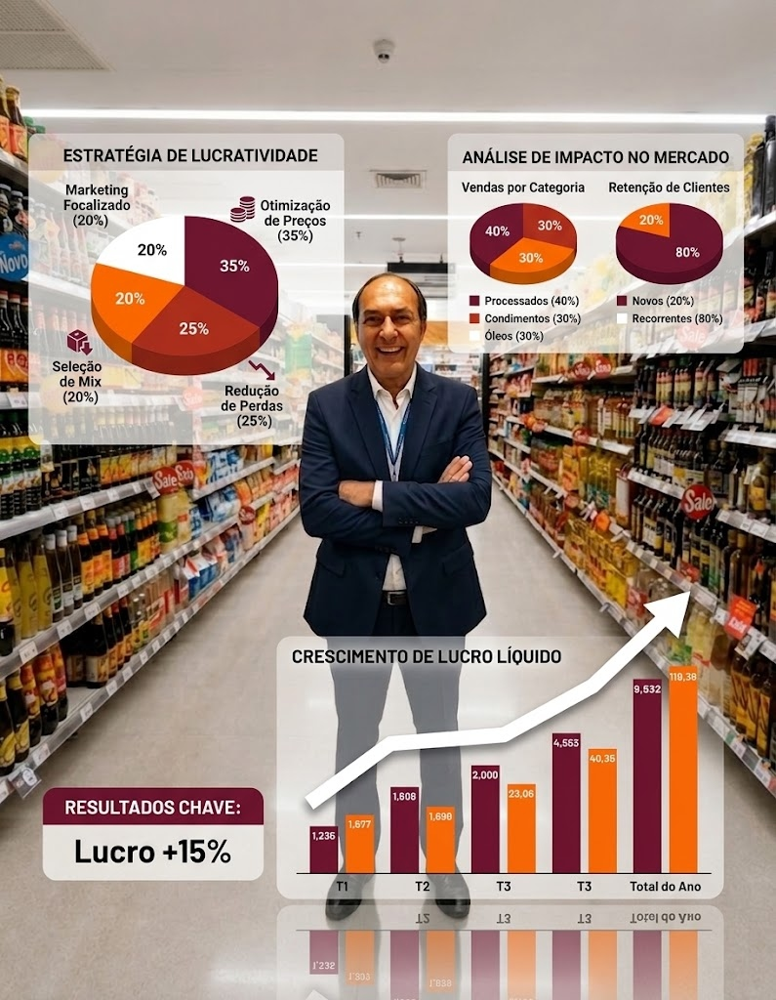

Margem de lucro abaixo do esperado
Você vende muito, mas no final do mês o lucro não aparece. A conta não fecha e você não sabe exatamente para onde o dinheiro está indo.
Desde 1990, a Pró Super transforma operações de autosserviço com método, diagnóstico cirúrgico e acompanhamento lado a lado no chão de loja.
São mais de 3 décadas sendo a pioneira em consultoria supermercadista no Brasil. Leve a experiência de quem vive o varejo para dentro da sua loja.

Esses são os desafios mais comuns que identificamos ao iniciar uma consultoria. Se você se reconhece em algum deles, a Pró Super pode ajudar a transformar os resultados do seu supermercado para que se torne um negócio altamente lucrativo.
Você vende muito, mas no final do mês o lucro não aparece. A conta não fecha e você não sabe exatamente para onde o dinheiro está indo.
Quebras, furtos, vencimentos e erros de estoque consomem silenciosamente sua lucratividade.
Preços definidos sem considerar margem, giro, concorrência e o papel de cada item na loja.
A operação depende do dono, sem padronização, rotina clara e responsáveis preparados.
Capital parado e espaço ocupado por produtos que não giram ou não geram retorno.
Decisões tomadas por intuição, sem indicadores de desempenho. Sem dados, é impossível identificar gargalos e oportunidades de melhoria com precisão.
Cada frente é adaptada ao estágio, ao porte e às prioridades do seu supermercado.
Análise profunda de todos os processos do seu supermercado — financeiro, marketing, operacional, comercial e de pessoal — para identificar gargalos e as maiores oportunidades de melhoria imediata.
Otimização do portfólio de produtos com Curva ABC de lucratividade, análise de categoria e eliminação de itens que drenam seu caixa sem retorno.
Implementação de processos, controles e cultura organizacional para reduzir perdas operacionais, administrativas e por furto interno e externo.
Definição de preços competitivos e rentáveis a partir de margem, giro, mercado e posicionamento da loja.
Formação de líderes e equipes para executar processos com produtividade, padronização e qualidade.
Organização da loja e exposição estratégica para ampliar o ticket médio e estimular a compra.
Mais previsibilidade, controle de despesas e condições para um crescimento sustentável.
Estrutura de acompanhamento para margens, giro, estoque, produtividade e decisões baseadas na realidade da operação.
Planejamento comercial e ações promocionais para atrair clientes, aumentar vendas e proteger a rentabilidade.
A transformação acontece com prioridades claras e participação da equipe em cada etapa.
Entendemos a realidade, os desafios e os objetivos específicos do seu supermercado.
Análise de processos, finanças, mix, pessoas, comercial e operação.
Definição das prioridades e das ações práticas para cada oportunidade identificada.
Execução acompanhada, com orientação próxima para a operação ganhar consistência.
Ajustes e consolidação de uma operação mais rentável, organizada e sustentável.

Fundador e consultor principal da Pró Super
Produziu conteúdos técnicos reconhecidos pelo setor, com publicações nas Revistas SuperVarejo, Superhiper e Supermercado Moderno. Possui canal educativo no YouTube e compartilha seu conhecimento para elevar o nível de gestão do setor supermercadista no Brasil.
Palestrante em nível nacional sobre gestão empresarial.
Sim! A Pró Super oferece atendimento presencial e também consultoria remota, permitindo atender supermercados em todo o Brasil. Entre em contato para verificar a disponibilidade e a modalidade mais adequada para sua situação.
Já nas primeiras semanas de implementação, especialmente em elevação de margens, redução de perdas e ajustes na precificação. Melhorias consistentes e sustentáveis são consolidadas ao longo de 3 a 9 meses, dependendo da complexidade da operação e do comprometimento da equipe.
O processo começa com uma conversa para entender os desafios do supermercado. Depois, realizamos o diagnóstico completo, definimos as prioridades e acompanhamos a implementação das melhorias.
O diagnóstico grátis é uma conversa inicial para entender os principais desafios da operação e identificar oportunidades prioritárias, sem compromisso.